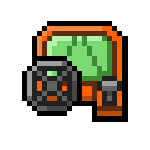
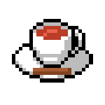
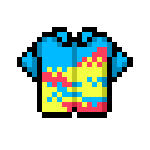
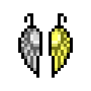

THIS PAGE CONTAINS SPOILERS FOR ALL DANGANRONPA SERIES!
Personality
Kayama, despite her calm demeanor at first glance, can be chaotic and hot-headed. She’s a person who likes to
compete and prove her own point. She doesn't let anyone get under her skin and will use force to defend herself
if necessary. At the beginning of the Killing School Trip, she struggles to control her calm, not very active in
the conversation group. However, this changes over time, and she becomes more open to interactions between
classmates when she feels comfortable. She’s backward in social interactions, sometimes leading to awkward
situations or confusion from others. Her sarcastic attitude irritates some people around. Despite her rebellious
behavior, she tries to lighten the mood with jokes.
She's clumsy and has a habit of bumping into various objects in her path, hence the bandages on her body. Kayama
also has a short memory and quickly becomes distracted, forgetting the simplest activities such as eating or
sleeping. Adrenaline often drives her to make radical decisions that she often regrets later. She hates orders
and rebels when told to do something. Failures trigger her anger and disappointment, and she has a tendency to
destroy objects around.
Before the Tragedy and during the Killing School Trip, she is in love with Kazuichi, which is why she wants to
impress him most of the time by complimenting him in a non-obvious way, which means he doesn't fully understand
her intentions. Although she has problems with her emotions and feelings, and sometimes doesn’t understand
herself. After time she becomes bolder towards him, which results in showing her perverted side when they start
conversation.
She can sometimes be cold towards people who have passed away. She finds it difficult to trust anyone, keeping
her distance. She has low self-esteem, so she often criticizes herself, turning everything into a joke, hiding
her weaknesses. When someone wants to be friends, she demands proof because she doesn't believe anyone will like
her.
Kayama also has her own quirks and preferences. One of them is hypersensitivity to germs and dirt. She offers to
wash Kazuichi's dirty jumpsuit. In Island Mode, Kayama talks about how she would like to "get close" with
someone in a car, away from prying eyes.
In Chapter 3, Kayama also becomes infected with the disease of despair. From a positive nature, she becomes
depressive and pessimistic, and her self-confidence disappears, which initially surprises others. Her loud voice
becomes quiet and gloomy, which does not suit her character. She has a good memory and can remember every
detail. Like Mikan, she is able to plan and manipulate others to her own advantage. Under the influence of the
disease, she tried to hurt herself in front of others to get Kazuichi's sympathy.
Talents and Abilities
Ultimate Car Racer
Kayama has been fascinated by adrenaline and competition since childhood. Video games and other students with
talents were a big motivation for her. Bored with everyday life, Kayama decided to look for a better life,
trying new things to discover her calling.
Kayama always rode her bike to school at high speed, performing dangerous tricks, which attracted the attention
of nearby regular students who were always gossiping about her. One day, while spending time on her bike, she
had an accident, injuring her knees, which made it impossible for her to continue riding. Not wanting to give up
her hobby, she decided to switch to machines. For this purpose, she decided to buy her first motorcycle with her
pocket money.
During her first trimester, Kayama decided to try racing tournaments, winning cups and medals by taking first
places. The director of Hope's Peak Academy saw her potential and offered her the opportunity to join the class
of talented students without having to repeat the grade, giving her the title of "Ultimate Car Racer."
She once challenged Mondo to a fast street race, winning it easily by passing him between narrow streets and
obstacles.
Analytical Skills
During one of the Class Trials, when Kayama had an objection to Hajime's statement, she started a Rebuttal
Showdown. She had doubts about Hajime's arguments and presented a different point of view. During the argument
battle, Hajime unexpectedly loses. As it later turns out, Kayama was right from the beginning, and the main
character takes lessons from it and presents new evidence, agreeing with Kayama. In the next Class Trials, the
protagonist focuses more on the details and killer’s perspective.
Prophetic Dreams
While being a child, Kayama had a dream that the world would suffer a tragic defeat, which turns out to be a
vision years later. Junko wanted to make sure that no one would spoil her plan, so she later tasked Ultimate
Despair to find her.
In Chapter 5, Kayama had another dream about accidentally killing one of the students, which ends in her
execution. Kayama wakes up convinced that it is another prophetic dream, which causes her to start behaving
strangely during the murder, thus exposing herself to accusations.
However, not every dream is a vision, so she does not know what is true and what is a figment of her
imagination.
Extraordinary Strength and Endurance
Despite her stature, she also has strength and great endurance. In Free Time, Kayama confesses that she often
had to use violence to defend herself from her old school bullies. This was often successful, leaving her alone
for a good few weeks. She spared no effort even during the Tragedy.
She also shows her strength when, while flirting with Kazuichi, she lifts him slightly from the ground, jokingly
telling him about the dominance she could achieve. She also boasts about her strength by lifting heavy objects.
| 029.Passionate Glasses 煩悩メガネ Glasses that let you see your passions as they blend with reality. They also have a function that letsyou shoot your passion like a laser. (WARNING: This laser *will* come out of your butt.) |
||||||
| Loves: | Likes: | |||||
| 046.2.5D
Headphones 2.5Dヘッドホン Headphones that provide a 2.5- dimensional sound quality. Every audiophile who used these said thesame thing: “These are hella psychopop.” |
||||||
| Loves: | Likes: | |||||
 |
058.The Funbox 家庭用ゲーム機 The newest home video game console. It promises a rewarding experience that money simply can’tbuy. You will need money to buy games for it, though. |
|||||
| Loves: | Likes: | |||||
|  | 064.Nitro Racer ドライビングニトロ A toy car that was popular a few years ago. A unique feature of this product is the Nitro Button.Pressing this button releases a very nice breeze from the car. |
|||||
| Loves: | Likes: | |||||
| 103.Skullhead Mask ドクロマスク A creepy skull mask that appears in “Skullhead Mask”. The lackeys of the terrorist Skelton are knownto wear this. |
||||||
| Loves: | Likes: | |||||
| 003.Coconut Juice ココナッツジュース A colorless, transparent juice found inside coconuts. The sweet taste is considered refreshing |
||||||
| Loves: | Likes: | |||||
|  | 006.Cinnamon Tea シナモンティー Black tea infused with cinnamon sticks. It is said to be effective for warming your body andmaintaining proper digestion. |
|||||
| Loves: | Likes: | |||||
| 011.Gugelhupf Cake クグロフ This cake is said to be a favorite of Marie Antoinette. Its name is German for “priest’s hat”. |
||||||
| Loves: | Likes: | |||||
| 013.Sweet Bun Bag 菓子パン袋 Filled with a variety of sweet breads, including melon and peanut butter flavors. The bag has a logoof Hansel & Gretel. |
||||||
| Loves | Likes | |||||
| 015.Viva Ice ビバ氷 This strawberry-flavored shaved ice treat comes with a spoon containing lottery numbers. If yournumbers win, you receive more shaved ice. |
||||||
| Loves | Likes | |||||
|  | 020.Iroha T-Shirt イロハシャツ A regular t-shirt emblazoned with a cluttered poem. "Though the flower is gone, its scent lingers.Who in this world is truly unchanging? Today we cross the towering mountains of vanity, unswayedby superficial dreams." |
|||||
| Loves | Likes | |||||
|  | 031.Earring of Crushed
Evil 破邪のピアス An earring created by the legendary home tutor. Crafted from silver and gold into the shape of awing. The gold is said to increase luck, while the silver is said to accumulate luck. |
|||||
| Loves | Likes | |||||
| 044.Kiss Note KISSノート A notebook considered to be a good luck charm. The human whose name is written in this notebookshall kiss you. The human who uses this notebook will lose their heart forever. |
||||||
| Loves | Likes | |||||
| 045.Black Rabbit Picture
Book 黒ウサギ読本 An introductory book for pulling various cons. The cover has a black rabbit on it to avoid attention.Apparently there is a white rabbit and red rabbit version of this book as well. |
||||||
| Loves | Likes | |||||
| 048.Male Cylinder オスシリンダー A laboratory instrument with a masculine symbol on it. Organic synthesis is possible by combiningthis with the measuring flask. |
||||||
| Loves | Likes | |||||
| 109.Bandage Wrap 包帯 A cloth bandage wrap used to treat wounds. In some cases, you can also use this to demonstrateyour morbidity or cruelty. |
||||||
| Loves | Likes | |||||
| 112.Hagakure Crystal
Ball 葉隠流水晶 A broken crystal ball held together with adhesive tape. The previous owner used this item to predictthe future. 30 percent of the time, he was accurate 100 percent of the time. |
||||||
| Loves | Likes | |||||
| 133. Kayama’s
Undergarments 烏山のパンツ Kayama’s favorite lace panties. It perfectly reflects her feisty character. At the same time, lace, bowand sea color add delicacy and femininity. | ||||||
| Loves: | Likes: | |||||